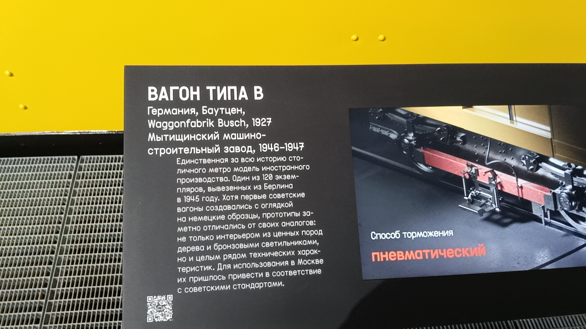
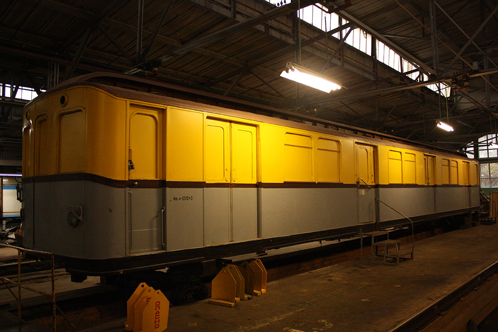

Вагон типа В № 158
Вагон типа В № 158 — уникальный музейный экспонат с непростой судьбой. Построенный в 1927 году в Германии для Берлинского метрополитена, он пережил Вторую мировую войну, был вывезен в Москву в качестве трофея и долгие годы служил бытовкой, прежде чем стать частью экспозиции Музея Транспорта Москвы.
Основные данные
| Модель | В-4 (изначально BVG CI Tw) |
| Номер | 158 (ранее 106) |
| Год постройки | 1927 |
| Завод-изготовитель | Orenstein & Koppel (Германия) |
| Город | Москва 🇷🇺 |
| Текущее состояние | Не эксплуатируется |
| Назначение | Музейный |
| Депо/Парк | Музей транспорта Москвы |
История
Берлин
Эксплуатация в Bw Seestraße
Вагон (под номером 106) работал в Берлинском метрополитене.
Простой
Вагон не использовался.
Работа в Bw Friedrichsfelde
Эксплуатировался в составе 105-253-353-106.
Отправка в Москву
Вагон вывезен в СССР в качестве трофея.
Москва
Переоборудование
На Мытищинском заводе переделан в тип В1 (получил номер 158).
Эксплуатация в Москве
Работал в депо ТЧ-2 «Сокол», ТЧ-1 «Северное», ТЧ-3 «Измайлово» и ТЧ-4 «Красная Пресня».
Списание
Снят с баланса метрополитена.
Бытовка
Использовался как бытовка в ТЧ-4 «Красная Пресня», тележки были демонтированы.
Реставрация
Проходил восстановление на ВРК «Братеево» (покраска и восстановление кузова).
Передача в музей
Доставлен в Музей транспорта Москвы.
Фотогалерея

📸 pfandrom

📸 pfandrom

📸 Официальный сайт Мэра Москвы

📸 I K(transphoto.org)
Нажмите на фото для увеличения